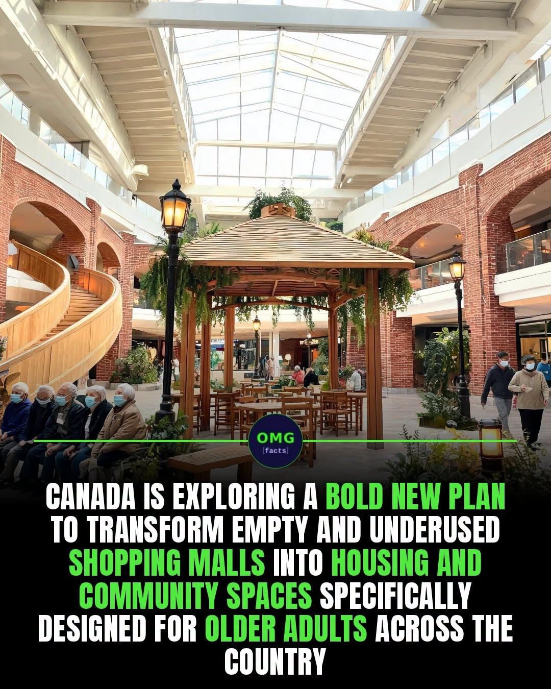

Article #011 · November 2026
From Shopping Malls to Communities: A New Vision for Senior Living
Reimagining underused retail properties as accessible housing and connected communities.

By Willis Butts · Terra Nova Development, Inc.
The Opportunity
Across North America, underused shopping malls and aging retail centers occupy large sites with roads, parking, utility connections and proximity to established neighborhoods. Rather than treating every struggling mall as a failed investment, communities can explore whether these sites can become places where people live, receive care, socialize and thrive.
A Community, Not Just an Apartment Building
Imagine accessible homes surrounding an indoor pedestrian street. Residents could walk to a clinic, pharmacy, library, grocery store, community kitchen, exercise room and shared garden without navigating traffic. Covered, climate-controlled walkways could offer year-round activity, while gathering spaces help prevent isolation. These amenities should serve neighbors of all ages, not segregate older adults.
What Can Be Reused?
Some malls could accommodate residential conversion in suitable sections. Others would be better redeveloped with new housing on surplus parking lots, while retaining useful existing buildings for shops and community services. Many deep-floor retail buildings lack the windows, ventilation, plumbing and fire exits needed for housing. Every proposal requires structural, environmental, accessibility and financial review.
Affordable Housing by Design
Public land partnerships, nonprofit ownership, mixed-income financing, housing vouchers and targeted grants could help make homes affordable. Reuse alone does not guarantee low rents; acquisition, retrofits, code compliance and ongoing operations must be carefully budgeted. Communities should measure real housing costs and resident outcomes rather than relying on appealing renderings.
The Terra Nova Connection
Terra Nova Community Havens and Give & Take spaces could occupy part of a redesigned mall: free exchanges of household goods, repair workshops, community meals, volunteer programs and intergenerational learning. A shared community center can make assistance feel like participation rather than charity.
How to Begin
Start with one willing property owner and municipality. Study local housing demand, transit, building condition and renovation costs. Invite older residents, disability advocates, healthcare providers and neighborhood groups into the design. Pilot a small community hub before committing to a full redevelopment. Track affordability, safety, accessibility and social connection.
The Larger Vision
A declining shopping center need not become a vacant monument. With thoughtful design and realistic financing, it can become a neighborhood again: a place to live, walk, learn, share and belong. There is no them. There is only us.